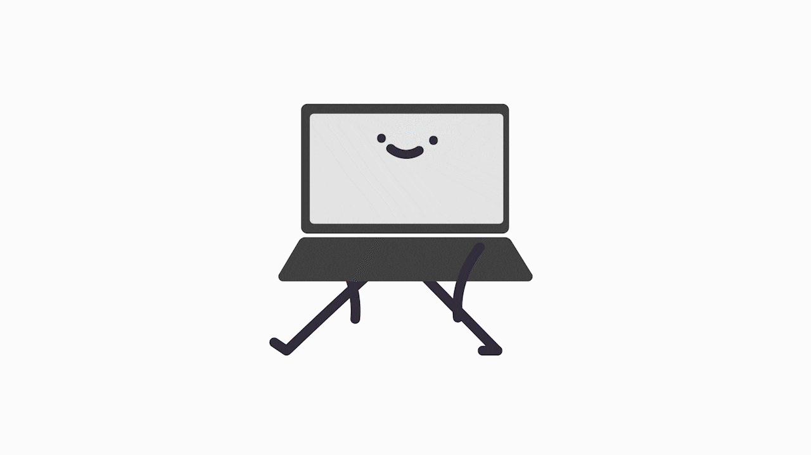

作品介紹
根據研究，記錄事情能夠大幅提高完成的機率，而以往在記錄事項時，人們都是以手寫的方式為主。到了現代，「拍照」則是變成最常用的方式，也是最容易執行的習慣。我們希望以直覺的方式：拍照，來記錄事情，讓記錄這件事變得簡單、有趣。
Little Note是一款用拍照就可以記錄事情的App，不但省去打字步驟，使用者在被提醒時也能與可愛的角色互動。
負責項目

｜共同負責項目
企劃發想、使用者研究

｜個人負責項目
App UI設計、角色動畫製作、影片拍攝、海報製作
設計成果

設計亮點
1. 開啟App即為相機
為了將記錄的步驟減少到最少，使用者開啟App後便會直接啟動相機，讓使用者能快速達到記錄的目的。並且符合我們設計的初衷：簡單、方便。
2. 全滑動選項
使用者在選擇「提醒時間」及「項目」，可以透過滑動來快速找到所需的選項。
3. 與記錄項目互動
將物品擬人化，並使用向量插畫風格來製作動畫，讓使用者在使用過程中能感到活潑、新奇。
使用者研究
專案初期，我們從自身及身邊同學的經驗中發現拖延症的問題，進而去分析其中的原因。首先是年輕人因為「記錄事情」太過複雜，所以漸漸失去此習慣。
在分析市面上的To-Do App後，我們發現這些App使用上的過程都太過繁瑣，讓人不會想要主動去做那些代辦事項。所以我們想製作簡單上手的App，使這些代辦事項不會變得煩人，甚至變得有趣、療癒。
初期透過普發問卷，了解大家在記錄事情上的狀況。我們發現作業或家務等是最多人需要記錄起來的事項。
從這些問卷中整理出人物誌，確認App使用的客群及需要的功能。目標族群設在大學生至社會新鮮人，並以年輕人會喜愛的可愛風格來設計整個App。
要記錄的事項及風格確定後，我們討論要如何不使用文字，而是使用「拍照」的方式來記錄，並且確立流程。
確認整體功能後，我透過製作動畫來模擬完整的使用流程，讓我們在與指導老師溝通時能更清楚說明此App的雛形。下方動畫是模擬使用者需要提醒自己購買日用品時，可透過拍攝空瓶的方式，讓App辨識類別，並在桌面產生提醒人物。


{kind=link}
{kind=link}
{kind=link}
{kind=link}
{kind=link}
{kind=link}
{kind=link}
{kind=link}
{kind=link}
{kind=link}
{kind=link}
{kind=link}